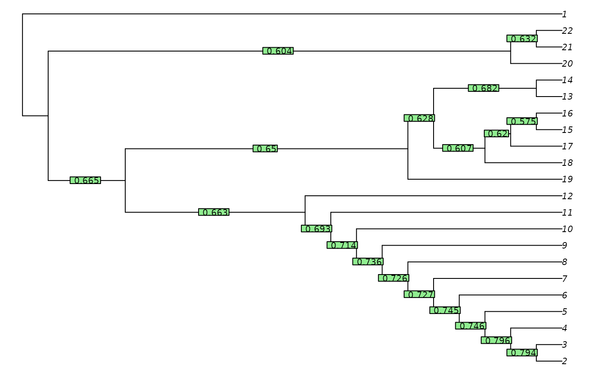
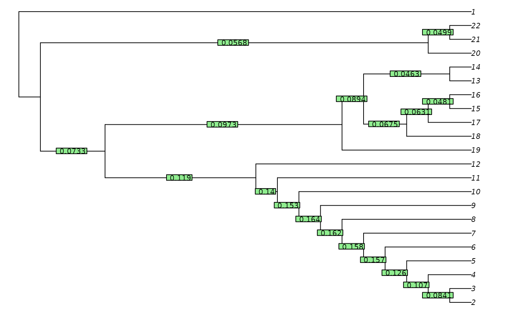

The site concordance factor Minh2020TreeSearch is a measure of the strength of support that the dataset presents for a given split in a tree.
Usage
QuartetConcordance(tree, dataset = NULL)
ClusteringConcordance(tree, dataset)
PhylogeneticConcordance(tree, dataset)
MutualClusteringConcordance(tree, dataset)
SharedPhylogeneticConcordance(tree, dataset)Arguments
- tree
A tree of class
phylo.- dataset
A phylogenetic data matrix of phangorn class
phyDat, whose names correspond to the labels of any accompanying tree.
Details
QuartetConcordance() is the proportion of quartets (sets of four leaves)
that are decisive for a split which are also concordant with it.
For example, a quartet with the characters 0 0 0 1 is not decisive, as
all relationships between those leaves are equally parsimonious.
But a quartet with characters 0 0 1 1 is decisive, and is concordant
with any tree that groups the first two leaves together to the exclusion
of the second.
NOTE: These functions are under development, and may be incompletely tested or change without notice. Complete documentation and discussion will follow in due course.
See also
Other split support functions:
JackLabels(),
Jackknife(),
MaximizeParsimony()
Examples
data("congreveLamsdellMatrices", package = "TreeSearch")
dataset <- congreveLamsdellMatrices[[1]][, 1:20]
tree <- referenceTree
qc <- QuartetConcordance(tree, dataset)
cc <- ClusteringConcordance(tree, dataset)
pc <- PhylogeneticConcordance(tree, dataset)
spc <- SharedPhylogeneticConcordance(tree, dataset)
mcc <- MutualClusteringConcordance(tree, dataset)
oPar <- par(mar = rep(0, 4), cex = 0.8)
plot(tree)
TreeTools::LabelSplits(tree, signif(qc, 3))
TreeTools::LabelSplits(tree, signif(cc, 3))
TreeTools::LabelSplits(tree, signif(pc, 3))

par(oPar)
pairs(cbind(qc, cc, pc, spc, mcc))
